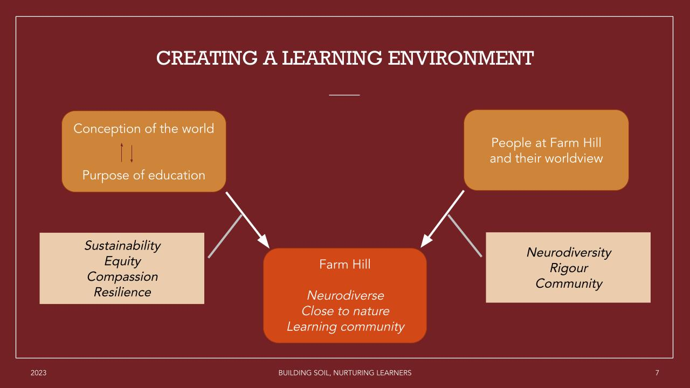

Building soil, Nurturing Learners
Rethinking Life and Education
At Farm Hill, education is not found in strict routines or rigid curricula; instead, it is cultivated like the soil on which the community stands—layer by layer, through attentive, mindful care. This small, resource-intensive experiment in learning is built upon a philosophy that deeply questions mainstream assumptions about schooling, success, and even community itself.
Reframing the Environment: Philosophy in Practice
Following Schön’s concept of “reflection-in-action,” educators and learners at Farm Hill view themselves as reflective practitioners, ever alert to the feedback between thought and action. The design of their learning environment emerges from a conscious “conception of the world,” fueling a cycle—beliefs inform educational practice, which in turn reshapes worldview. This reflective process is central to the daily life of the community.

Neurodiversity: Soil for Every Seed
Most schools impose a template, identifying “special” children when they don’t fit the mold. Farm Hill radically departs from this by making natural inclusivity its foundation. Every learner—neurotypical or neurodivergent—is seen as unique, and education is tailored to individuals, not the other way around. The approach draws from constructivist and inquiry-led pedagogies, where learning emerges from each child’s own knowledge and questions. Responsive teaching, guided discovery, and formative, interactive assessment become tools for nurturing rather than sorting.
Close to Nature, Close to Life
Set amidst a mango farm, connection to nature is not decorative—it is essential. Daily tasks revolve around cycles of food, water, and waste, binding learning to a deep, lived consciousness of limits, sufficiency, and sustainability. These are not lessons in a workbook; they’re part of daily being, modeling for children how to build a life attuned to the health of land, self, and collective.
Community as Ecosystem
A true learning community, Farm Hill blurs the lines between teachers, students, and parents. All are learners, co-growing through constant reflection on their roles. Mutual support structures arise organically—from classroom routines to meals and shared farm work. This ecology of care builds both compassion for others and resilience in oneself. Support is multidirectional: even the young can lead; even the adults can need.
The Adaptive Curriculum: Living Assessment
Goals at Farm Hill are adaptive, crafted to meet cognitive, social, emotional, and practical needs as they shift. Pedagogy centers the learner, allowing interests and abilities to surface and shape content. Assessment is continuous but informal—an ongoing dialogue, not a final verdict. Growth is measured in understanding, participation, and flourishing, not by marks alone.
Philosophy, Not Policy
At its core, Farm Hill enacts a lived synthesis of constructivist, ecological, and humanistic philosophies of education. Learning is “living inquiry,” echoing Dewey’s insight that the purpose of education is not merely the acquisition of knowledge, but the ongoing reconstruction of experience. The community is ever unfinished, alive with change—a place where everyone is both teacher and student, and where education germinates in the ordinary acts of care, questioning, and reflection.
References
- Ahuja, A., & Venu, G. (2023). Building Soil, Nurturing Learners: Reflections from a Neurodiverse, Close-to-Nature Learning Community. STORIES Conference.
- Dewey, J. (1938). Experience and Education. Collier Books.
- Schön, D. A. (1983). The Reflective Practitioner: How Professionals Think in Action. Basic Books.
- Bruner, J. S. (1961). The act of discovery. Harvard Educational Review, 31, 21-32.
- Smeds, P. (2015). “Farm Education and the Value of Learning in an Authentic Environment.” International Journal of Science & Environmental Education, 10(3), 381-404.
- Whitehead, A. N. (1929). The Aims of Education and Other Essays. Macmillan.
Farm Hill invites us to imagine how education, like a flourishing farm, might emerge from the patient tending of diverse lives, rooted together in the living soil of community.